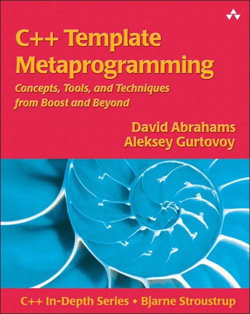

This CD-ROM accompanies the book C++ Template Metaprogramming: Concepts, Tools, and Techniques from Boost and Beyond by David Abrahams and Aleksey Gurtovoy, published by Addison-Wesley.
It contains:
All the materials on the CD can be used "as is." That is, as long as you don't need to modify anything, you don't have to copy the contents to your local drive. You can browse the source code, read the documentation, and even compile the examples directly from the CD. That said, you'll probably want to copy it to faster media for production use.
To compile the book's sample code, just put the CD's boost_1_32_0/ directory into your compiler's #include path.
The libraries we present in this book go to great lengths to hide the problems of less-than-perfect compilers, so it's unlikely that you'll have trouble with the examples we present here. That said, we divide C++ compilers roughly into three categories:
The portability guide lists the compilers that are known to fall into each of these categories. For those in category "B", the guide refers to a list of portability idioms. These idioms don't appear in the book's main text, but have been applied to the sample code you find on this CD-ROM. GCC is available free for most platforms and recent versions (3.2 and higher) have no problems handling the code we present here. (Even if you have a relatively modern compiler from category "A", it might be a good idea to grab a copy of GCC with which to cross-check your code. Often the easiest way to decipher an inscrutable error message is to see what some other compiler has to say about your program).
The most up-to-date version of the Boost software is also available from the official Boost website, www.boost.org. If you prefer to work with the latest and greatest stuff, be sure to check the Boost main page once in a while to see if a new release is out—or subscribe to the Boost Announce mailing list and be notified when it happens!
All the materials on this CD-ROM comply with the Boost License Requirements, meaning that you are free to copy, use and modify the software for any use (commercial and non-commercial).
If you have any questions/comments regarding the Boost software provided on this CD-ROM (including Boost.MPL), please join us in discussion on the Boost Users or Boost Developers mailing lists.
Additional and updated book-related material, including the inevitable errata, will appear on the book's web site: http://www.boost-consulting.com/metaprogramming-book. You'll also find a place there to report any mistakes you might find in the example code.
Copyright © David Abrahams and Aleksey Gurtovoy, 2005. Distributed under the Boost Software License, Version 1.0. (See accompanying file LICENSE_1_0.txt or copy at http://www.boost.org/LICENSE_1_0.txt)